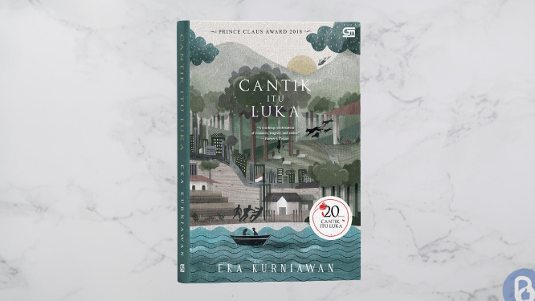

“Cantik Itu Luka” adalah sebuah novel yang ditulis oleh Eka Kurniawan, seorang penulis Indonesia yang diakui secara internasional. Novel ini mengisahkan kisah perempuan bernama Dewi Ayu dan keluarganya, yang hidup di sebuah desa kecil di Indonesia selama periode yang meliputi masa penjajahan Jepang hingga era reformasi. Dewi Ayu, seorang perempuan yang cantik dan penuh misteri, menjadi pusat cerita ini. Meskipun memiliki kecantikan fisik yang menakjubkan, Dewi Ayu mengalami perjalanan hidup yang penuh penderitaan dan kekerasan. Ia diperkosa oleh tentara Jepang pada masa pendudukan, dan dari peristiwa tragis tersebut, ia melahirkan empat anak perempuan dengan nasib yang tidak kalah sulit. Novel ini memberikan gambaran yang jujur dan kuat tentang kehidupan yang sering kali pahit namun tetap dipenuhi dengan harapan. Dengan bahasa yang tajam dan puitis, “Cantik Itu Luka” menghadirkan pengalaman membaca yang mendalam dan menggugah, menjadikannya sebagai salah satu karya sastra yang mengesankan dari penulis Indonesia, Eka Kurniawan.